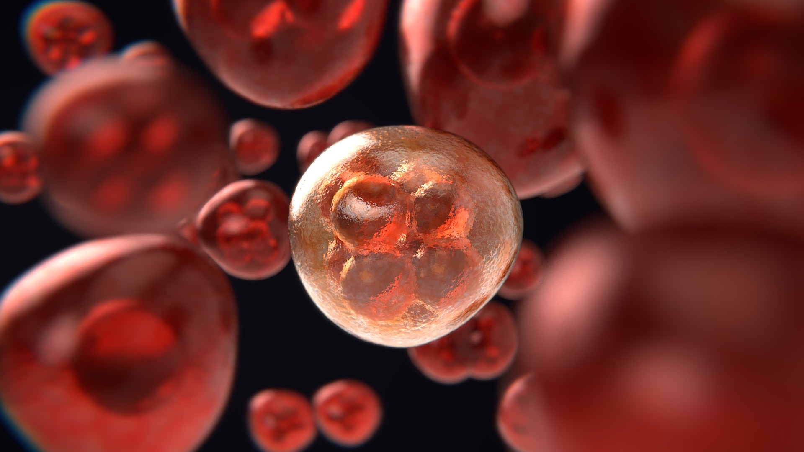

Cancer Treatment- Detailed look
Types of Cancer Treatments
1. Surgery
Purpose: Remove the tumor and surrounding tissue.
Procedure: Involves cutting out the cancerous tissue.
Common Uses: Early-stage cancers, solid tumors.
Side Effects: Pain, infection, fatigue, changes in appearance.
2. Radiation Therapy
Purpose: Kill or shrink cancer cells using high-energy radiation.
Procedure: External beam radiation or internal radiation (brachytherapy).
Common Uses: Localized cancers, before or after surgery.
Side Effects: Skin changes, fatigue, nausea, localized pain.
3. Chemotherapy
Purpose: Kill rapidly dividing cancer cells.
Procedure: Administered orally or intravenously.
Common Uses: Various cancers, often in combination with other treatments.
Side Effects: Nausea, vomiting, hair loss, fatigue, increased risk of infection.
4. Immunotherapy
Purpose: Boost the body's immune system to fight cancer.
Procedure: Uses substances made by the body or in a lab.
Common Uses: Melanoma, lung cancer, kidney cancer.
Side Effects: Flu-like symptoms, fatigue, skin reactions, inflammation.
5. Targeted Therapy
Purpose: Target specific molecules involved in cancer growth.
Procedure: Often oral or intravenous drugs.
Common Uses: Cancers with specific genetic mutations (e.g., HER2-positive breast cancer).
Side Effects: Diarrhea, liver problems, high blood pressure, skin problems.
6. Hormone Therapy
Purpose: Block or remove hormones that fuel certain cancers.
Procedure: Oral medications, injections, or surgery to remove hormone-producing organs.
Common Uses: Breast cancer, prostate cancer.
Side Effects: Hot flashes, fatigue, mood changes, decreased libido.
7. Stem Cell Transplant (Bone Marrow Transplant)
Purpose: Replace damaged bone marrow with healthy cells.
Procedure: High doses of chemotherapy/radiation followed by infusion of stem cells.
Common Uses: Leukemia, lymphoma, multiple myeloma.
Side Effects: Infection, graft-versus-host disease, fatigue.
Emerging Treatments
1. CAR T-cell Therapy
Purpose: Modify a patient’s T cells to attack cancer cells.
Procedure: T cells are extracted, modified, and re-infused.
Common Uses: Certain types of leukemia and lymphoma.
Side Effects: Cytokine release syndrome, neurological problems.
2. Precision Medicine
Purpose: Tailor treatment based on genetic profile.
Procedure: Genetic testing to identify the best treatment options.
Common Uses: Various cancers, especially those with known genetic mutations.
Side Effects: Varies depending on the specific treatment used.
Supportive and Palliative Care
Purpose: Manage symptoms and improve quality of life.
Procedures: Pain management, nutritional support, psychological support.
Common Uses: All stages of cancer, particularly advanced stages.
Side Effects: Generally aimed at minimizing discomfort and side effects.
Considerations for Treatment
Individualized Plans: Treatment plans are tailored to the individual’s specific type and stage of cancer, overall health, and personal preferences.
Combination Therapies: Often, multiple treatments are combined for a more effective approach.
Clinical Trials: Participation in clinical trials may provide access to cutting-edge treatments.
Side Effects Management
Medications: Anti-nausea drugs, pain relievers, and other medications to manage side effects.
Lifestyle Changes: Diet, exercise, and stress management techniques.
Support Systems: Counseling, support groups, and palliative care teams.
Conclusion
Cancer treatment is complex and multifaceted, involving a combination of surgery, radiation, chemotherapy, and other specialized therapies. The goal is to eliminate cancer, prevent its spread, and manage symptoms to improve the patient’s quality of life. Consulting with an oncologist to discuss treatment options, potential side effects, and the latest advances in cancer care is essential for developing an effective treatment plan.

Back to Previous Page